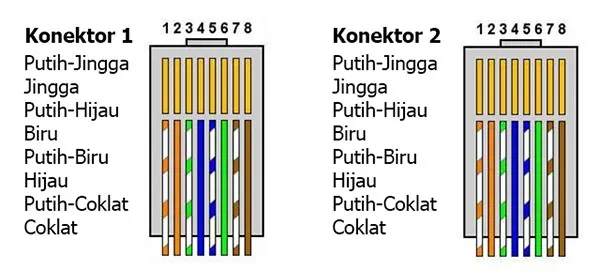
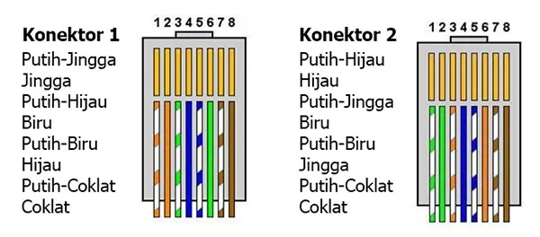
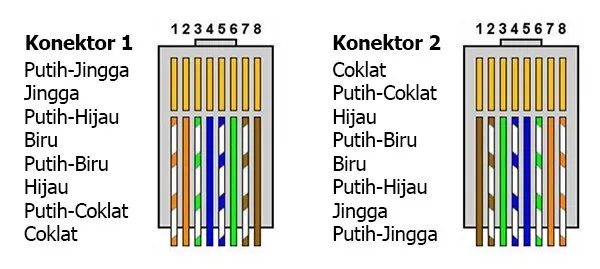

Kabel straight through memiliki urutan yang sama antara ujung konektor satu dengan lainnya. Kabel jenis ini biasanya digunakan untuk menghubungkan dua perangkat yang berbeda, misal antara router dengan switch.
Kabel jenis ini memiliki urutan yang berbeda antara tiap konektor. Kabel jenis ini biasanya digunakan untuk menghubungkan dua perangkat yang sama, seperti router dengan router.
Kabel jenis ini memiliki urutan terbalik antara ujung satu dengan yang lain. Kabel ini memiliki fungsi yang sama seperti kabel straight-through, namun kabel ini lebih dikhususkan kepada perangkat yang memiliki konsol, misalnya switch dengan printer.
